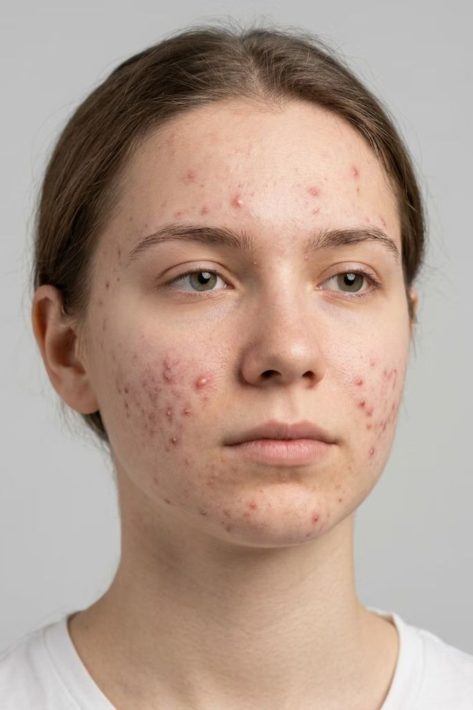

Chapter 02 Acne vulgaris
Acne Vulgaris Pathophysiology
What happens inside the follicle, step by step.

Acne pathophysiology
The 4 drivers of acne
Sebum overproduction
Follicular hyperkeratinization
Cutibacterium acnes colonization
Inflammation
01
Sebum overproduction
Androgen-driven excess oil production.
02
Follicular hyperkeratinization
Keratin build-up → clogged follicle.
03
Cutibacterium acnes colonization
Proliferation within the sebum-rich follicle.
04
Inflammation
Immune activation → inflammatory lesions.